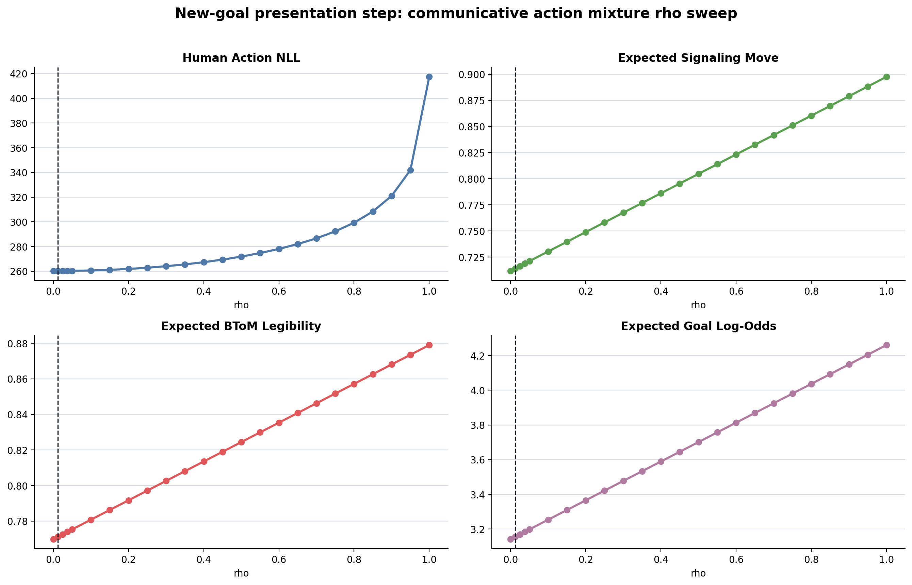
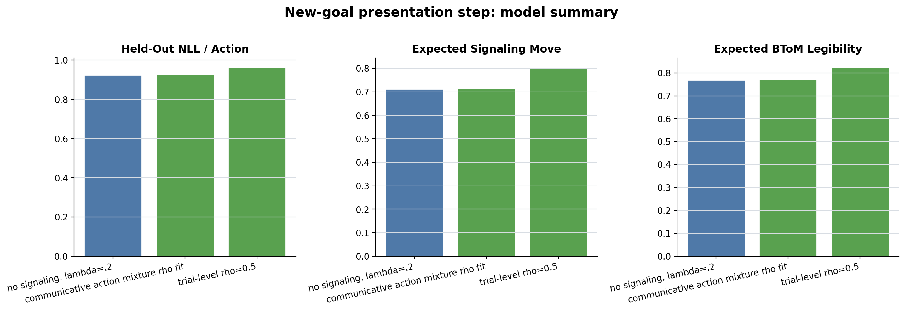
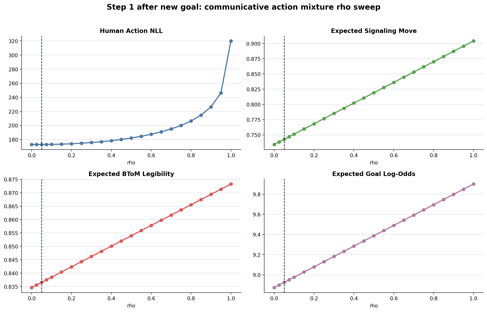
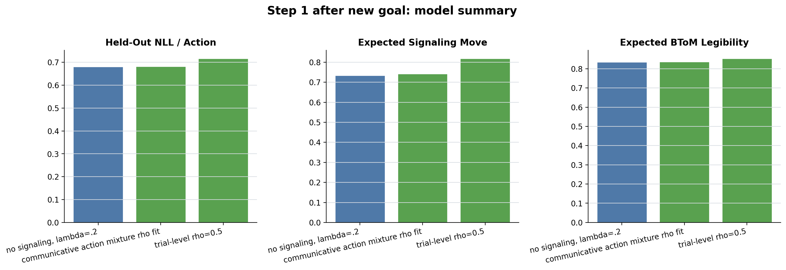
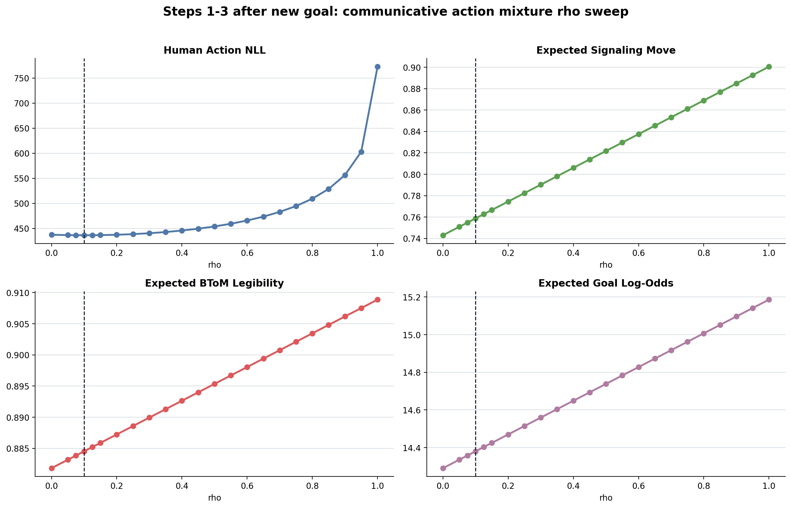
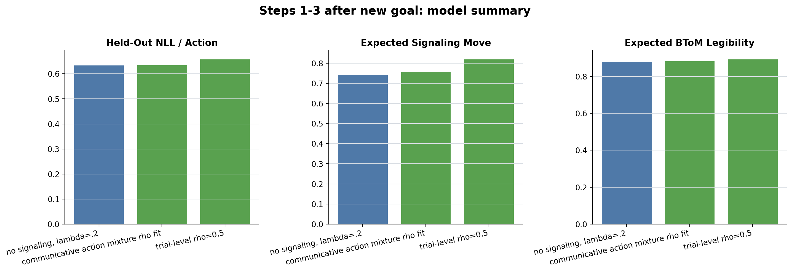
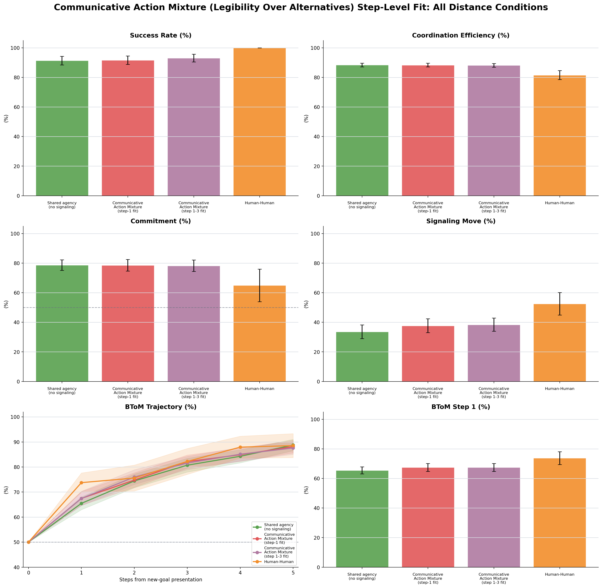
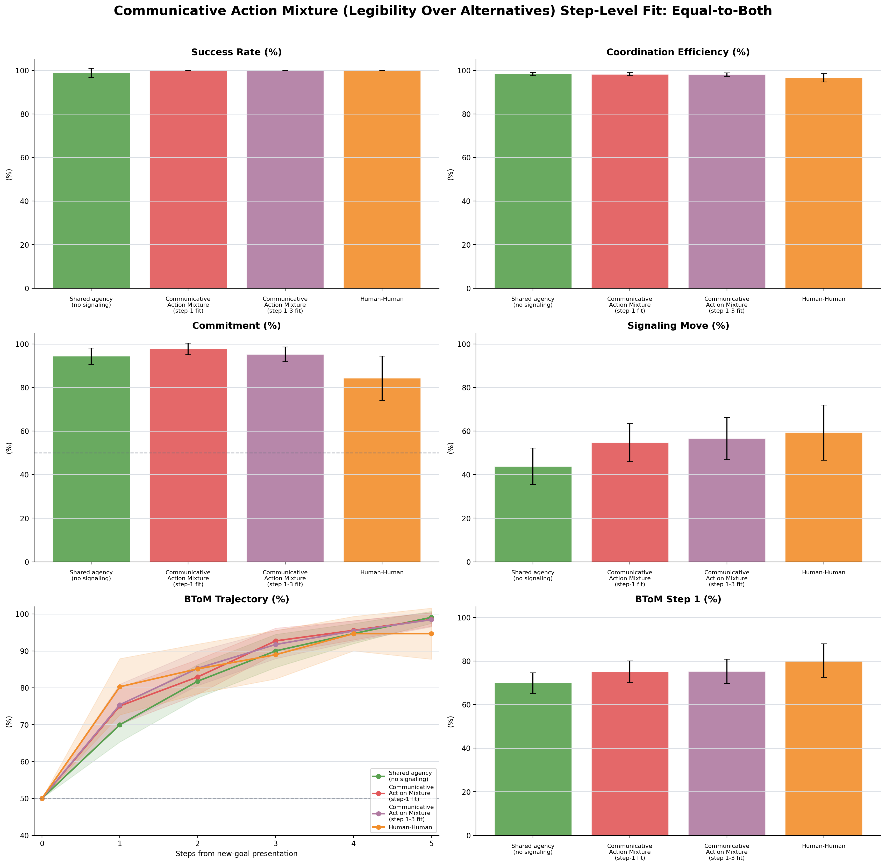
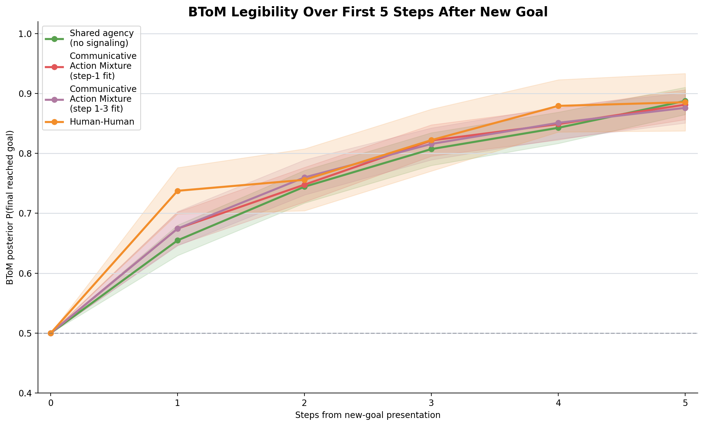

Model
pi(a|g) = (1-rho) pi_base(a|s,g) + rho pi_comm(a|s,g)
pi_comm(a|g) proportional to pi_base(a|s,g) exp(log P(g|a) - log sum_{g' != g} P(g'|a))
New-goal presentation step
Actions=282. Fixed lambda=0.2; only rho is fitted. Goal weights are unchanged for every rho.


| model | rho | lambda | n_params | actions | in_sample_nll | heldout_nll | heldout_nll_per_action | delta_heldout_nll | expected_signal_move | expected_btom_legibility | expected_mean_log_odds | aic | bic |
|---|---|---|---|---|---|---|---|---|---|---|---|---|---|
| no signaling, lambda=.2 | 0.00 | 0.20 | 0 | 282 | 260.273 | 260.273 | 0.923 | 0.000 | 0.71 | 0.77 | 3.14 | 520.55 | 520.55 |
| communicative action mixture rho fit | 0.01 | 0.20 | 1 | 282 | 260.266 | 260.969 | 0.925 | 0.697 | 0.71 | 0.77 | 3.16 | 522.53 | 526.17 |
| trial-level rho=0.5 | 0.50 | 0.20 | 0 | 282 | 271.849 | 271.849 | 0.964 | 11.576 | 0.80 | 0.82 | 3.70 | 543.70 | 543.70 |
Step 1 after new goal
Actions=254. Fixed lambda=0.2; only rho is fitted. Goal weights are unchanged for every rho.


| model | rho | lambda | n_params | actions | in_sample_nll | heldout_nll | heldout_nll_per_action | delta_heldout_nll | expected_signal_move | expected_btom_legibility | expected_mean_log_odds | aic | bic |
|---|---|---|---|---|---|---|---|---|---|---|---|---|---|
| no signaling, lambda=.2 | 0.00 | 0.20 | 0 | 254 | 172.995 | 172.995 | 0.681 | 0.000 | 0.73 | 0.83 | 8.87 | 345.99 | 345.99 |
| communicative action mixture rho fit | 0.05 | 0.20 | 1 | 254 | 172.946 | 173.267 | 0.682 | 0.271 | 0.74 | 0.84 | 8.93 | 347.89 | 351.43 |
| trial-level rho=0.5 | 0.50 | 0.20 | 0 | 254 | 182.144 | 182.144 | 0.717 | 9.148 | 0.82 | 0.85 | 9.39 | 364.29 | 364.29 |
Steps 1-3 after new goal
Actions=688. Fixed lambda=0.2; only rho is fitted. Goal weights are unchanged for every rho.


| model | rho | lambda | n_params | actions | in_sample_nll | heldout_nll | heldout_nll_per_action | delta_heldout_nll | expected_signal_move | expected_btom_legibility | expected_mean_log_odds | aic | bic |
|---|---|---|---|---|---|---|---|---|---|---|---|---|---|
| no signaling, lambda=.2 | 0.00 | 0.20 | 0 | 688 | 437.438 | 437.438 | 0.636 | 0.000 | 0.74 | 0.88 | 14.29 | 874.88 | 874.88 |
| communicative action mixture rho fit | 0.10 | 0.20 | 1 | 688 | 436.449 | 438.117 | 0.637 | 0.680 | 0.76 | 0.88 | 14.38 | 874.90 | 879.43 |
| trial-level rho=0.5 | 0.50 | 0.20 | 0 | 688 | 453.990 | 453.990 | 0.660 | 16.553 | 0.82 | 0.90 | 14.74 | 907.98 | 907.98 |
Posterior Predictive: All Distance Conditions

Posterior Predictive: Equal-to-Both

BToM Trajectory

Posterior Predictive Summary
| condition_scope | group | Success Rate (%) | Coordination Efficiency (%) | Commitment (%) | Signaling Move (%) | BToM Step 1 (%) |
|---|---|---|---|---|---|---|
| average | Shared agency no signaling | 91.39 | 88.39 | 78.69 | 33.64 | 65.49 |
| average | Communicative action mixture step-1 fit | 91.67 | 88.35 | 78.53 | 37.69 | 67.45 |
| average | Communicative action mixture step-1-3 fit | 93.06 | 88.15 | 78.23 | 38.38 | 67.45 |
| average | Human-Human | 100.00 | 81.58 | 64.97 | 52.53 | 73.75 |
| equal_to_both | Shared agency no signaling | 98.89 | 98.38 | 94.44 | 43.89 | 69.97 |
| equal_to_both | Communicative action mixture step-1 fit | 100.00 | 98.29 | 97.78 | 54.72 | 75.07 |
| equal_to_both | Communicative action mixture step-1-3 fit | 100.00 | 98.16 | 95.28 | 56.67 | 75.40 |
| equal_to_both | Human-Human | 100.00 | 96.64 | 84.38 | 59.38 | 80.28 |
Raw Sources
| label | rho | rawTrialsPath | command |
|---|---|---|---|
| Shared agency no signaling | 0.00 | /Users/chengshaozhe/Documents/DukeECClab/code/multiplePlayerGridGame_socketIO/dataAnalysis/raw_data/model_model_simulations/joint_rl/shared_agency_costly_mixture_step_level_fit/no_signaling/always_signal_vs_always_signal_2p3g_raw_trials_beta_3_lambda_0p2_alpha_0_score_costly_mixture_sessions_0_to_29.json.zst | node /Users/chengshaozhe/Documents/DukeECClab/code/multiplePlayerGridGame_socketIO/dataAnalysis/scripts/simulate_always_signal_vs_always_signal_2p3g.js --sessions 30 --trials 12 --seed 42 --lambda 0.2 --alpha 0.0 --beta 3.0 --score costly_mixture --horizon 1 --unshaped-joint-rl --compact-diagnostics --output-dir /Users/chengshaozhe/Documents/DukeECClab/code/multiplePlayerGridGame_socketIO/dataAnalysis/model_model/shared_agency_costly_mixture_step_level_fit/simulations/no_signaling --raw-output-dir /Users/chengshaozhe/Documents/DukeECClab/code/multiplePlayerGridGame_socketIO/dataAnalysis/raw_data/model_model_simulations/joint_rl/shared_agency_costly_mixture_step_level_fit/no_signaling |
| Communicative action mixture step-1 fit | 0.05 | /Users/chengshaozhe/Documents/DukeECClab/code/multiplePlayerGridGame_socketIO/dataAnalysis/raw_data/model_model_simulations/joint_rl/shared_agency_costly_mixture_step_level_fit/step1_fit/always_signal_vs_always_signal_2p3g_raw_trials_beta_3_lambda_0p2_alpha_0p05_score_costly_mixture_sessions_0_to_29.json.zst | node /Users/chengshaozhe/Documents/DukeECClab/code/multiplePlayerGridGame_socketIO/dataAnalysis/scripts/simulate_always_signal_vs_always_signal_2p3g.js --sessions 30 --trials 12 --seed 42 --lambda 0.2 --alpha 0.05 --beta 3.0 --score costly_mixture --horizon 1 --unshaped-joint-rl --compact-diagnostics --output-dir /Users/chengshaozhe/Documents/DukeECClab/code/multiplePlayerGridGame_socketIO/dataAnalysis/model_model/shared_agency_costly_mixture_step_level_fit/simulations/step1_fit --raw-output-dir /Users/chengshaozhe/Documents/DukeECClab/code/multiplePlayerGridGame_socketIO/dataAnalysis/raw_data/model_model_simulations/joint_rl/shared_agency_costly_mixture_step_level_fit/step1_fit |
| Communicative action mixture step-1-3 fit | 0.10 | /Users/chengshaozhe/Documents/DukeECClab/code/multiplePlayerGridGame_socketIO/dataAnalysis/raw_data/model_model_simulations/joint_rl/shared_agency_costly_mixture_step_level_fit/step1_3_fit/always_signal_vs_always_signal_2p3g_raw_trials_beta_3_lambda_0p2_alpha_0p1_score_costly_mixture_sessions_0_to_29.json.zst | node /Users/chengshaozhe/Documents/DukeECClab/code/multiplePlayerGridGame_socketIO/dataAnalysis/scripts/simulate_always_signal_vs_always_signal_2p3g.js --sessions 30 --trials 12 --seed 42 --lambda 0.2 --alpha 0.1 --beta 3.0 --score costly_mixture --horizon 1 --unshaped-joint-rl --compact-diagnostics --output-dir /Users/chengshaozhe/Documents/DukeECClab/code/multiplePlayerGridGame_socketIO/dataAnalysis/model_model/shared_agency_costly_mixture_step_level_fit/simulations/step1_3_fit --raw-output-dir /Users/chengshaozhe/Documents/DukeECClab/code/multiplePlayerGridGame_socketIO/dataAnalysis/raw_data/model_model_simulations/joint_rl/shared_agency_costly_mixture_step_level_fit/step1_3_fit |